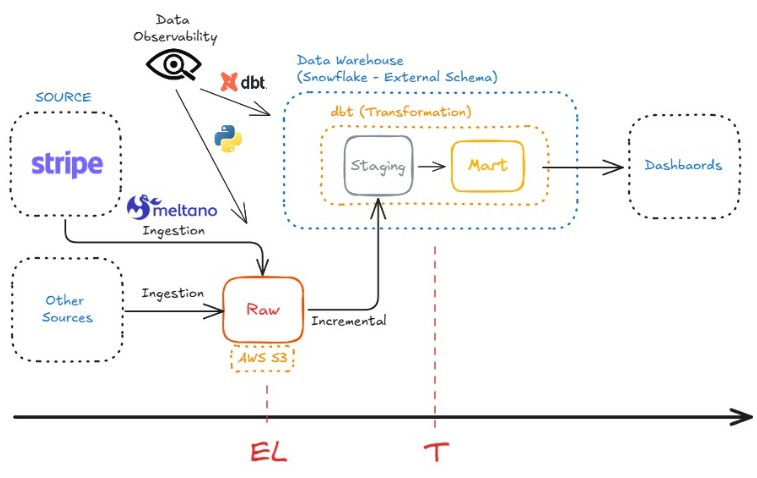

Engenharia de Dados do Zero à Produção.

Te treinando para ser valioso no mercado:
-> Data Engineer Completo com visão orientada a Produto (Product-Oriented Mindset).
Estudo de Caso
Vamos construir, do zero, uma plataforma de dados de um E-commerce moderno.
Cada fase reflete uma necessidade real de negócio, e cada decisão técnica é feita com propósito - essa é a essência de pensar engenharia de dados orientada a produto.
Esse empresa vende produtos online (ex: roupas, eletrônicos, suplementos, etc.) e investe em campanhas de marketing digital (Facebook Ads, Google Ads, e-mail marketing, etc.).
Os dados vêm de duas principais fontes:
- API de pedidos e clientes (JSON aninhado) - simulando um sistema tipo Shopify. - Arquivos CSV com dados de campanhas - custo, cliques, impressões, conversões (estilo Facebook Ads ou Google Ads).
Necessidades de Negócio:
- Quais campanhas trazem mais vendas?
- Qual o ROI (retorno sobre investimento) das campanhas?
- Quais clientes estão mais propensos a recomprar ou cancelar?
Respostas da Engenharia:
- Criar pipeline moderno e robusto que cruza pedidos (API) com campanhas (CSV).
- Modelar fatos e dimensões com custos, receita e margem.
- Disponibilizar base confiável para modelos de churn/conversão (Machine Learning).
Motivação
Aprendi Engenharia de Dados do zero. Não foi em um curso formal nem em um programa de treinamento, mas ao longo de uma jornada real de trabalho e reinvenção. Fiz tudo sozinho, mas tive um empurrão de um mentor, a quem tenho bastante carinho (Obrigado, Guilherme!).
Depois de concluir meu mestrado nos EUA, embarquei num PhD de prestígio na Holanda. Infelizmente, a vida é incerta e tive que retornar ao Brasil por conta da pandemia, sem finalizar o programa.
Decidi me tornar PJ no Brasil e começar a trabalhar para consultorias de dados americanas.
Sem querer, descobri um novo mundo: a Engenharia de Dados.
- Pipelines complexos, Warehouses modernos e times inteiros organizados em torno do cliente.
Foi nesse contexto “aleatório” que entrei em Engenharia de Dados. Comecei a construir pipelines completos do zero: desde a ingestão de dados de fontes diversas (APIs, S3, CSVs) até o versionamento e a modelagem incremental com dbt-core.
Trabalhei com empresas de diversos países - desde consultorias de dados nos EUA a projetos com a FENG Brasil, responsável por usar dados para impulsionar os programas de sócio-torcedor dos maiores clubes do país (Flamengo, Fluminense, Vasco, Botafogo, São Paulo, Internacional, Coritiba, etc) - implementando o dbt, estratégias incrementais e ajudando em projetos de Machine Learning.
Do outro lado do oceano, a vida também caminhava: retornei à Europa como Nômade Digital, estabeleci base em Barcelona e iniciei o processo de cidadania espanhola - uma decisão pessoal que acabou simbolizando essa jornada de autonomia e aprendizado contínuo.
Essa trajetória me deu liberdade, propósito e uma vontade enorme de compartilhar o que aprendi - passo a passo - com quem também quer trilhar esse caminho.
Disclaimer:
Não sou nenhum “Jedi” dos dados e não tenho “10 anos” de experiência.
Mas acredito que posso te ajudar a sair do zero. 😉
Objetivo do Curso
Dar uma formação sólida em Engenharia de Dados Moderna, mostrando como projetar, construir e operar pipelines reais, de forma mais agnóstica possível em relação ao Data Warehouse usado (Snowflake, BigQuery, Databricks, etc.) e com o sabor mais importante: Visão Orientada a Produto.
Você vai compreender:
- Como os dados são extraídos, transformados e governados em pipelines reais.
- Como construir sistemas de dados que não quebram, são testáveis e fáceis de escalar.
- E como aplicar práticas de engenharia de software (CI/CD, versionamento, automação) ao mundo dos dados.
Pré-requisitos
Este curso é do ZERO!
Ele foi pensado para quem quer entender o que realmente acontece dentro de um pipeline - mesmo que nunca tenha trabalhado com Engenharia de Dados antes.
Há apenas 1 pré-requisito que te recomendo fazer para te deixar mais confortável:
- Curso Básico de SQL da W3 (gratuito, em torno de 4 horas)
O restante, eu vou ensinar.
Conteúdo - Curso Completo em 3 Fases
O curso foi separado em fases, cada fase será um produto vendido separadamente, como verá mais adiante.
A fase 0, é gratuita. Ela é apenas a preparação do seu computador.
| Fase | Nome | Tema | Foco | Produto final | Valor Percebido |
|---|---|---|---|---|---|
| 0 | Ambiente e Setup | Preparação da máquina e do ambiente de trabalho | Instalação do VS Code, Git, Python, criação de venv, conta no GitHub, setup de repositório e acesso ao warehouse | Ambiente local funcional e organizado, pronto para rodar pipelines | Agora eu tenho uma máquina configurada como a de um engenheiro de dados profissional. |
| 1 | Do Zero à Engenharia de Dados | Fundamentos e pipeline limpo | EL→T, SQL, modelagem, camadas Bronze–Silver–Gold | Pipeline estático e limpo, rodando localmente ou no warehouse | Aprendi como os dados fluem - consigo montar meu próprio data warehouse. |
| 2 | Do Pipeline ao Sistema Confiável | Automação, testes e governança | dbt, testes de qualidade, CI/CD, GitHub Actions, RBAC | Pipeline automatizado, versionado, testado e monitorado | Meu pipeline é de verdade - roda sozinho e detecta erros. |
| 3 | O Mundo em Tempo Real | Escalabilidade e orquestração | Airflow, Kafka, PySpark, monitoração e performance | Pipeline streaming + DAG completa de orquestração | Consigo lidar com dados em tempo real e coordenar jobs complexos. |
Fase 1 – Do Zero à Engenharia de Dados
Visão de Negócio
O e-commerce quer entender de onde vem o seu faturamento - quais campanhas geram mais vendas e quais produtos são mais lucrativos.
Nesta fase, você vai construir o pipeline que cruza:
- Pedidos e clientes (API JSON)
- Campanhas de marketing (CSV)
O foco é integrar essas fontes e criar as tabelas-base: dim_customers, dim_products, fact_orders, fact_campaigns. Aqui nasce o data warehouse que permitirá análises de receita, custo e ROI.
👉 A engenheiria de dados é responsável por garantir que o fluxo da informação - da origem até a tabela final - seja confiável, limpo e bem modelado.
Objetivo
Entender como os dados fluem, como se transformam e como modelar um pipeline limpo e eficiente.
Blocos Principais
1. Como os dados se movem (ETL vs ELT e Medallion Architecture)
2. SQL e modelagem (DDL, DML, dimensões e fatos)
3. Capturando mudanças (MERGE, Incrementais, SCD1 e SCD2)
4. Fundamentos de uma arquitetura moderna (Foco no Snowflake - visão agnóstica)
5. Construindo o primeiro pipeline EL→T end-to-end
6. Modelagem e camadas Bronze–Silver–Gold
Entrega
- Pipeline completo (JSON + CSV → warehouse → tabelas na última camada).
- Documentação clara e lógica de modelagem.
“Aprenda a construir do zero um pipeline moderno, entendendo como os dados realmente fluem dentro de empresas modernas.”
Fase 2 – Do Pipeline ao Sistema Confiável
Visão de Negócio
O e-commerce agora depende dos dados para decidir onde investir em marketing e como otimizar margens e campanhas.
Para isso, o pipeline precisa ser confiável, testável e governado. Nesta fase, você transforma o que antes era bastante manual: implementa dbt, cria testes automáticos, documenta fontes e modelos, garante os acessos e permissões corretas para os usuários e configura CI/CD no GitHub.
Tudo isso garante que métricas como ROI, CAC e Lifetime Value sejam calculadas corretamente, mesmo com mudanças nas fontes de dados.
Objetivo
Transformar o pipeline em algo que poderia rodar em produção - com testes, versionamento, CI/CD e governança.
Blocos Principais
1. Introdução ao dbt e Implementação (projeto modular, models, sources, refs)
2. Testes de qualidade (not_null, unique, relationships, accepted_values)
3. Documentação e lineage (dbt docs e metadados)
4. Integração Contínua (GitHub Actions + deploy automático)
5. Governança e RBAC
6. Mini orquestração (Snowflake Tasks, Cloud Scheduler)
Entrega
- Projeto dbt completo, testado, versionado e com deploy automatizado.
- Workflow confiável e auditável.
“Transforme seu pipeline em algo que poderia rodar em produção - com testes, governança e deploy automático.”
Fase 3 – O Mundo em Tempo Real
Visão de Negócio
Com a operação madura, o e-commerce quer monitorar em tempo real o desempenho das campanhas e detectar quedas de performance ou picos de vendas.
O engenheiro de dados implementa orquestração e streaming, permitindo que:
- Novas vendas sejam processadas assim que chegam da API, relatórios sejam atualizados automaticamente (Airflow DAGs), alertas sejam disparados quando houver anomalias.
Esse tipo de sistema orienta decisões diárias de marketing - como ajustar orçamentos ou prever picos de demanda - e serve de base para análises de churn e conversão em um futuro curso de Machine Learning.
Objetivo
Dar o salto para pipelines vivos e automatizados, que rodam continuamente e reagem a eventos.
Blocos Principais
1. Conceitos de streaming e eventos (CDC, filas, partições)
2. Ingestão em tempo real com Kafka
3. PySpark e processamento distribuído 4. Orquestração com Airflow
5. Monitoração e alertas (logs, falhas, métricas)
6. Performance e otimização de custo
Entrega
- Pipeline em tempo real com DAG completa e observabilidade básica.
- Entendimento prático de orquestração e escalabilidade.
“Aprenda o que realmente diferencia um pipeline profissional: automação, tempo real e orquestração com Airflow e Kafka.”
Formato
- Aulas gravadas, curtas e progressivas
- Exercícios práticos em SQL, dbt e nas demais ferramentas, sempre com passo a passo e soluções
- Casos com JSONs e CSVs (simulando e-commerce e marketing)
- Mentoria e comunidade para dúvidas e projetos
- Repositório GitHub aberto com dataset e exemplos
Preço
O curso foi separado em fases, cada uma vendida como um produto separado (ou com desconto caso queira o curso completo). A fase 0 é gratuita.
| Fase | Curso | Preço Potencial | Motivação |
|---|---|---|---|
| Fase 1 | Fundamentos | R$ 599 | Agora você domina o fluxo de dados. Está pronto para levar isso à produção. |
| Fase 2 | Especialização 1 (nível júnior → pleno) | R$ 399 | Seu pipeline funciona - mas precisa ser automatizado e lidar com falhas para rodar em Produção |
| Fase 3 | Especialização 2 (nível pleno → sênior) | R$ 399 | Seu pipelines está vivo e automatizado, rodando continuamente e reagindo a eventos. |
- Curso Completo - sem desconto: R$1397
- Curso Completo - com desconto: R$ 999 (leve a última fase de graça!)
Inscreva-se
Quer ser avisado quando abrirem as inscrições?
Caio Velasco é Engenheiro Mecânico Cum Laude pela UFRJ e Mestre em Economia e Políticas Públicas pela UCLA, com bolsa da Fundação Lemann. Atualmente mora em Barcelona, na Espanha.
Depois de pausar um doutorado em Economia na Holanda durante a pandemia, passou a atuar remotamente em Projetos de Engenharia e Ciência de Dados, ajudando empresas dos EUA, Europa e Brasil a construírem plataformas modernas de dados.
A paixão por ensinar o levou a criar cursos que unem fundamentos de engenharia, clareza conceitual e prática real - mostrando como pensar como um engenheiro de dados, e não apenas escrever código.
💡 “Meu objetivo é ensinar com clareza e propósito - conectando o pensamento analítico à prática real de engenharia de dados.”